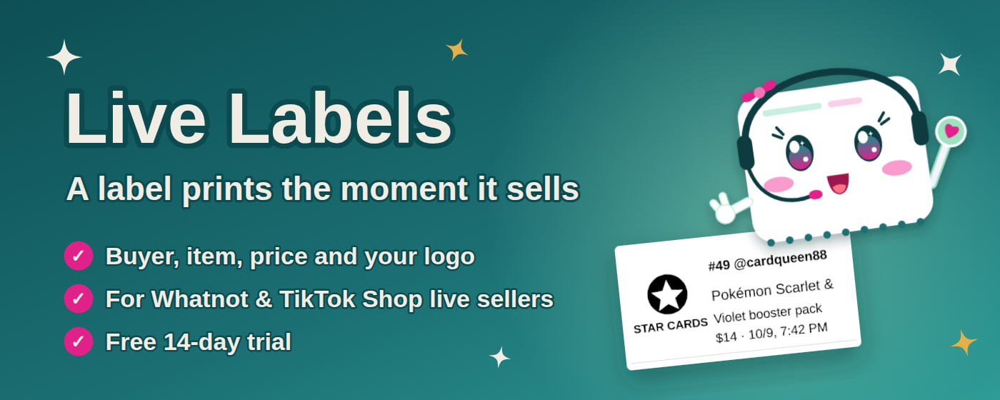

Verkaufsetiketten automatisch drucken – für Whatnot, TikTok Shop, eBay Live und Poshmark
Live Labels ist eine Chrome-Erweiterung für Live-Verkäufer. Sobald in deiner Live-Show ein Artikel verkauft wird, druckt sie auf deinem Thermodrucker ein Etikett mit Losnummer, Benutzername des Käufers, Artikel, Preis, Boxnummer des Käufers und deinem Shop-Logo. Kein Tippen, keine Klebezettel, kein Rätseln nach der Show, wer was gekauft hat.
Gut zu wissen: Das sind Sortier-Etiketten für deine Show, keine Versandetiketten. Deine Versandetiketten kommen weiter von Whatnot, TikTok Shop, eBay oder Poshmark. Du brauchst Chrome auf einem Computer mit geöffneter Show-Seite und einen Etikettendrucker.
Zu Chrome hinzufügen – 14 Tage oder 3 Shows kostenlos Danach 10 $/Monat oder 99 $/Jahr. Keine Karte zum Start nötig.Die Erweiterung gibt es auf Deutsch: Sprache in den Einstellungen wählen oder automatisch der Chrome-Sprache folgen lassen.

So druckst du Etiketten in einer Live-Show automatisch
- Live Labels zu Chrome hinzufügen und den Einrichtungsassistenten starten. Er verbindet deinen Etikettendrucker und druckt in etwa zwei Minuten ein Testetikett.
- Deine Whatnot-, TikTok-Shop-, eBay-Live- oder Poshmark-Show in Chrome öffnen. (Für eBay Live oder Poshmark vorher im Seitenbereich auswählen.)
- Den Live-Labels-Seitenbereich öffnen und Autodruck einschalten.
- Verkaufen. Jedes Mal, wenn eine Auktion endet oder ein Artikel verkauft wird, kommt ein Etikett aus dem Drucker. Aufkleben und weiter geht die Show.
Was auf jedem Etikett steht
Losnummer
Zählt von selbst hoch, damit jeder Verkauf eine Nummer hat.Käufer und Boxnummer
Jeder Käufer bekommt seine eigene Boxnummer. Kauft jemand drei Artikel, steht auf allen drei Etiketten dieselbe Box, und alles geht in ein Paket.Artikel und Preis
Aus der Verkaufsmeldung auf der Show-Seite, genau so, wie der Käufer sie gesehen hat.Dein Logo
Scharf in Schwarz-Weiß für Thermodrucker, auf jedem Etikett.Funktionen
- Erkennt jeden Verkauf auf der Show-Seite und druckt sofort
- Alle Verkäufe im Seitenbereich, Nachdruck mit einem Klick
- Etikett von Hand drucken für Verkäufe außerhalb der Kamera
- Wähle, was aufs Etikett kommt: Los, Käufer, Artikel, Preis, Datum, Kopfzeile
- Größen von 2" × 1" bis 4" × 6", in jeder Ausrichtung
- Auktionen bei eBay Live und Poshmark Posh Shows (Sofortkäufe werden noch nicht gelesen)
- Ein Hinweis im Seitenbereich, falls Verkäufe womöglich nicht gedruckt werden
Funktioniert mit dem Drucker, den du schon hast
USB- und Bluetooth-Thermodrucker drucken direkt aus Chrome. Jeder auf deinem Computer installierte Drucker funktioniert über den Chrome-Druckdialog, und mit QZ Tray oder PrintNode druckst du ohne Dialog auf jedem Drucker.
Preise
| Tarif | Preis | Enthalten |
|---|---|---|
| Testphase | 0 $ für 14 Tage oder die ersten 3 Show-Tage (je nachdem, was länger dauert) | Alle Funktionen, unbegrenzt Etiketten, ohne Karte |
| Monatlich | 10 $ / Monat | Alle Funktionen, unbegrenzt Etiketten, jederzeit kündbar |
| Jährlich | 99 $ / Jahr | Wie monatlich, zwei Monate gratis |
Testdrucke sind immer kostenlos. Zahlungen laufen über Polar (polar.sh). Preise in US-Dollar.
Häufige Fragen
Wie drucke ich in einer Whatnot-Show automatisch Etiketten?
Erweiterung installieren, Thermodrucker mit dem Assistenten verbinden, Whatnot-Show in Chrome öffnen, Live-Labels-Seitenbereich öffnen und Autodruck einschalten. Jedes Mal, wenn eine Auktion endet oder ein Artikel verkauft wird, druckt sie ein Etikett mit Los, Käufer, Artikel, Preis, Boxnummer und deinem Logo.
Funktioniert es mit TikTok Shop LIVE?
Ja. Verkäufe auf TikTok-Shop-Live-Seiten in Chrome werden genauso erkannt wie bei Whatnot.
Was ist eine Boxnummer?
Jeder Käufer einer Show bekommt seine eigene Boxnummer, die auf all seinen Etiketten steht. Kauft jemand drei Artikel, steht auf allen drei Etiketten dieselbe Box, und du packst sie zusammen.
Was kostet es?
14 Tage oder Ihre ersten 3 Show-Tage kostenlos (je nachdem, was länger dauert), mit allen Funktionen und ohne Karte. Danach 10 $ im Monat oder 99 $ im Jahr, unbegrenzt Etiketten.
Welche Daten sammelt Live Labels?
Es liest die Verkaufsmeldungen deiner Show-Seite nur, um deine Etiketten zu drucken. Verkaufsverlauf, Logo und Einstellungen bleiben in deinem Browser. Keine Werbung, keine Analyse, kein Tracking.
Ist Live Labels mit Whatnot oder TikTok verbunden?
Nein. Live Labels ist ein unabhängiges Tool und nicht mit Whatnot, TikTok, eBay oder Poshmark verbunden, von ihnen unterstützt oder gesponsert.
Wer Live Labels macht
Live Labels wird von Amir Rostami entwickelt, einem Whatnot- und eBay-Verkäufer, bei Element 79/47, LLC (Acworth, Georgia, USA). Schreib ihm auf Englisch an info@element7947.com.
Zu Chrome hinzufügen – 14 Tage oder 3 Shows kostenlos